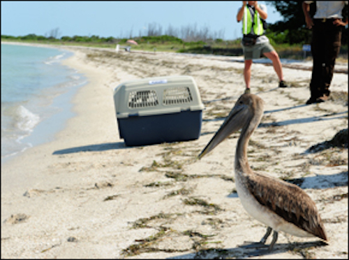
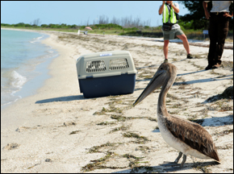
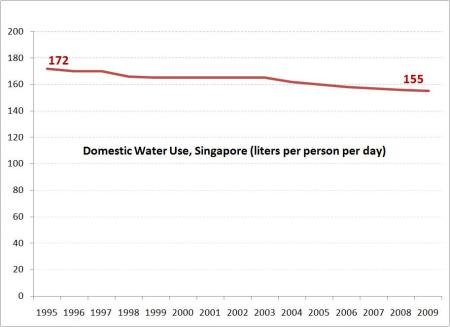

Environmental Groups Sue BP Under Clean Water Act
Please read the following on the legal requirement of our federal government to provide the clean-up for the oil spill.It is time to demand an appropriate scale of response to this disaster as dictated by Oil Pollution Act.http://donovanlawgroup.wordpress.com/2010/06/05/the-oil-pollution-act-provides-for-the-federalization-of-the-bp-oil-spill/
Posted On: 2010-06-07T11:02:00
Posted By: Sarah Younger
The BP oil disaster is one that we will be cleaning up for years to come and their is no better time to reevaluate what kind of restrictions are put in place to protect our waterways.It may sound crazy but industries have been dumping toxic chemicals into the same water that we drink from for years.Supreme court decisions continue to loosen regulations pertaining to clean water and the time has come to speak up.We need to pass new regulations to protect our water and our citizens from the many problems that come in affect from water toxicity.Fortunately, a new version of the clean water act is currently making its way through congress and we need to show our support.Get the word out and tell your congressman that you support the Clean Water Act.
Posted On: 2010-06-23T14:31:00
Posted By: Jacquie Pietrewicz
Dear Sirs,
I am seeking an attorney to sue BP on my behalf.
I made two attempts to get a claim from the GCCF, un-successfully.I am a self employed plumber and have been for 20 years.
My claim was for $86K. $16K in income losses, $70K for getting stuck in prison, on a traffic warrent, for 3 days with no money to get out!It was only $350 to get out.The way I figure it, BP owes me for 3 days of freedom.Pro Rata at what they make a day is roughly $.82B.You can have 33% but you MUST file before 8 Apr2 011.
I’m in a hurry to file and don’t have any money because I’m bankrupt from the Oil Spill.They denied my emergency claim and are taking their sweet time on my interum claim.
Reply to me right now, PLEASE,PLEASE,
DerekKnorr@hotmail.com
Posted On: 2011-03-31T18:03:00
Posted By: derek knorr



Content Date: 2010-06-07
Download Date: 2021-05-12
Document ID: L0C04BC9F